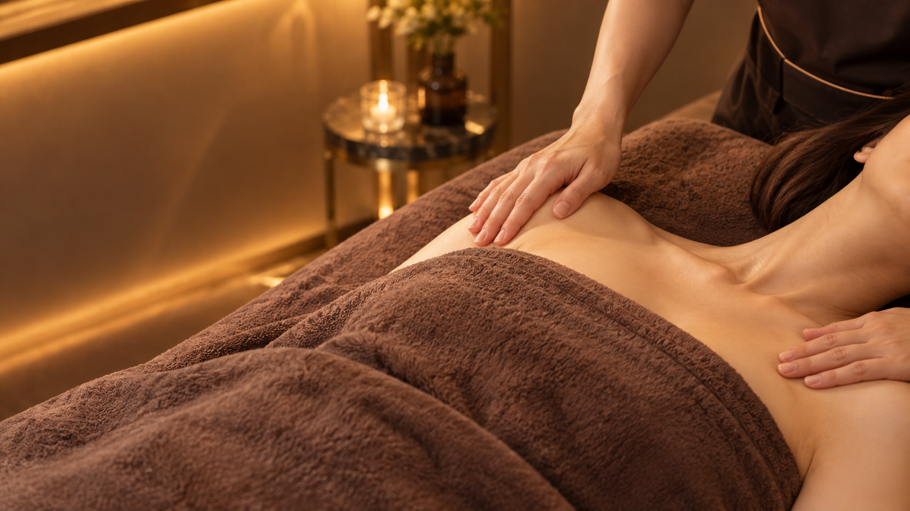

冒頭は受領済みの下着画像で「バストケア」と「ふんわりとしたバストラインを目指して」を示します。追加生成は、まず01〜04の4枚。05は相談シーンの繰り返しを減らすための任意カットです。
各プロンプトは対応する参照画像を添付して1枚ずつ生成。01〜04は実際の手技を確定するものではなく構成用の演出案。下着画像は現在の受領画像を継続使用。
各カットは横長16:9・1枚ずつ・文字なし。参照画像を添付して生成し、原寸PNGでお送りください。
バスト版C06：施術の全景
この参照画像を保存して添付

バスト版C07：手元の寄り
バスト版C08：横からのケア
バスト版C09〜C10：ケアを終えた余韻
任意：バスト版C04／C11の相談の別角度